Australia
The trip of a lifetime down under
In the fall of 2019 I spent two weeks in Australia, which were two of the most enjoyable weeks of my life. The impetus for the trip was my cousin Brad's wedding. He is my cousin from my dad's side and grew up in Buffalo, NY, the hometown of my dad and where the majority of his side of the family lives.
In 2016, my cousin Brad moved to Houston, where he soon met his current wife, Angela. Angela is a delight and originally from Perth, Australia. They dated for a few years and then were engaged in the fall of 2018. In the summer of 2019 they moved to her hometown of Perth and began preparing for the wedding in October of 2019.
In October a group of about a dozen family and friends from the states made the long journey down under for the wedding and additional antipodean adventures. The 17 hour flight from Houston to Sydney was grueling, then the 5 hour flight from Sydney to Perth felt like torture. We finally made it, though, and were exhausted but ready to begin the trip of a lifetime.
Perth
Upon arriving in Perth, we met up with our friends and family at a restaurant on the Swan River for a get-together the night before the wedding. We cut it close getting to Australia only one day before the wedding, but we were able to score flights from Houston to Sydney for only $525 on those dates!
We made a point to try to power through the exhaustion that afternoon so we could go to bed at a reasonable hour and try to reset our body clocks. I made it to bed about 9 PM and woke up fresh as a daisy the next morning around 10. It was a long and well-deserved slumber.
That morning my brother and I took a stroll around Kings Park, a world-class park that I read about in Bill Bryson's outstanding book on his travels in Australia called "In A Sunburnded Country." After jaunting around Perth for a few hours, it was time to get ready for the wedding. I was a groomsman so we all got suited and booted together, and had a few pints to take the edge off
The wedding went off without a hitch, Angela looked absolutely stunning and the service was beautiful. The only conceivable disadvantage was the Australia-England World Cup quarterfinal rugby match was at the same time as the wedding so some of the Aussie blokes were unhappy about that.
After the wedding we took some photos at Kings Park with the wedding party, then headed to the Perth Zoo for the reception. It was at the reception that we discovered that Angela's family was just as big and boisterous as our own. The two families took to each other like a duck to water. To say we had fun was an understatement. A highlight was the exquisite toast that my father gave, with just the right amount of poignancy, wit, and humour. He was lovingly referred to my the Australian denizens as the "Funcle." That day is a memory that I will cherish forever.
The next day, we all gathered at Angela's parent's house and had a good old fashioned Australian barbie. Angela's brother who owns a brewery (we'll get to that in a minute) brought a couple kegs of craft beer and the food was tremendous. We left right as the sun was going down and the Aussies were getting turned up. It was probably the best for my well-being the next morning that we left but I'd be lying if I said I didn't have a mild curiosity to see where the night was headed with a group of wild Aussies.
Exmouth
The day after the wedding, the majority of us made our way to Exmouth, a long way up the Western coast of Australia on the Ningaloo Reef. This was the town where Angela's brother, Justin, owned the aforementioned brewery, Whalebone Brewing. We drank many a pint at the brewery over the next few days and ate our fair share of delicious wood fired pizzas. The highlight of the brewery was a Woodstock themed party, where everyone dressed like hippies and they had a great live band.
In addition to the delicious beer, we had quite a few outdoor adventures during our time in Exmouth. One day we took a hike through a beautiful river gorge, with breathtaking views and some very nice hiking trails. After the hike we all refreshed ourselves with a nice snorkel at Turquoise Bay, a beautiful bay on the Indian ocean with tremendous snorkeling.
The next day, my parents, my brother, and I went SCUBA diving at the Navy Pier, a pier built by the US during WWII and subsequently purchased by the Australian Navy after the war. The dive masters claimed it was one of the top 10 dive sites in the world, which if that's the case then I've been to 1-9 because the dive was nice but I wouldn't consider it among the best in the world. In any case we had a great time and I always enjoy a chance to go diving.
The last day, my mom, brother, and I took microlight flights around the peninsula, which are like paragliders with propellers. The feeling when we first took off was indescribable, it was such a thrill and adrenaline rush. We flew around the Exmouth bay for a while looking for humpback whales to no avail, then flew over the Exmouth peninsula over to the Indian Ocean side, over the area we snorkeled at Turquoise Bay. The views from up there were spectacular and we saw myriad wildlife, including dolphins, sea turtles, many different types of rays, and massive schools of fish. It was one of the most fun and exhilarating experiences of my life.
With our time in Exmouth coming to a close, we wished Justin and his family adieu and made it to our final stop on the trip - Sydney.
Sydney
We arrived to Sydney in the early evening and took a short Uber ride downtown to our hotel. The accommodations were fabulous, we had a full kitchen, two bedrooms, two bathrooms, and a full sized balcony that looked out over downtown Sydney. The downtown skyline is mesmerizing, especially from a balcony at nighttime. We had just enough energy to grab a bite at a restaurant a few blocks from the hotel, which brings me to a digression on the food and drink in Australia.
I can't think of a bad meal we had the entire trip and the coffee was absolutely fantastic. When we first got to Australia, my brother and I got flat whites at a coffee shop in the airport and it was far superior to the majority of the coffee we get in the States. That trend would continue throughout the trip, every cup of coffee I had was excellent. The coffee alone is enough to not want to leave the country.
On our first full day in Sydney, our parents slept in while my brother and I explored the city. We walked all over downtown, around the harbor, to Circular Quay, and got great views of the two most iconic landmarks of Sydney - the Opera House and the Sydney Harbor Bridge. When we made it back to the hotel, our parents were up & ready to explore so we walked around some more parts of downtown and ventured through some parks. It was a pretty relaxing day but we got to see the character of the city, which I fell in love with. The best description I can give of the city is that it's like New York, except it's clean and the people are nice. That night we had another wonderful meal and turned in early to get ready for my most anticipated activity of the trip - the Sydney Harbor Bridge climb
I am a nerd when it comes to bridges so the Sydney Harbor Bridge was one of the things I was most excited to see when we got to Sydney. The best part is they have a tour that allows you to hike to the top of the massive arches that support the bridge. From the top you are afforded stunning views of the entire harbor, and one of the most unique views of the Opera House exactly two times higher than the roof of the Opera House (the Opera House was intentionally built to 220 ft tall in a nod to the 440 ft height of the harbor bridge).
After the bridge climb we met our parents at Circular Quay and took a ferry to Manly Beach, a laid back beach town on the outer harbor on the South Pacific. We wandered around town and enjoyed the views, some snacks, and a few pints. The laid back atmosphere was a welcome contrast to the hustle and bustle of Sydney.
When we returned to Sydney, my dad and I walked around town to a few bars that I had read about or were suggested by friends or family. One in particular stands out, the Baxter Inn. This is a speakeasy in the strictest sense. While it was on Google Maps, we had to walk down an alley to a courtyard, where we had to ask for directions and were pointed to an unmarked stairwell that led down into one of the most incredible bars I have ever been to in my life. The decor was something you would find during Prohibition, but it wasn't gaudy as these things often are. The bar was gorgeous and stocked with the most diverse assortment of liqors I have ever seen. The bartenders were friendly and knowledgeable and offered suggestions of whiskeys based on our preferences. I had two glasses of rye that were amazing from bottles I haven't seen before or since. Needless to say we had a blast.
The next day we took an Uber to Bondi Beach, a world famous beach and for good reason. The seasons were just turning to Spring & the weather was gorgeous, although the water was still quite chilly (although I imagine the South Pacific is always quite frigid). Luckily for us the beach wasn't too crowded as I imagine it gets during the summertime. We had a good time lounging on the beach and splashing around in the chilly water for a while, after which my brother and I made walked part of the way down the Bondi to Cougee Beach trail. This is a trail cut along the cliffs from Bondi Beach about 3 miles south to Cougee Beach. We only made it about halfway before heading back to downtown, but along the way were spectacular views and a series of art installations that had been erected as part of a public art project that Sydney had recently embarked on.
Our final day was last but not least. That day we toured the Sydney Opera House, the eye catching icon of the city. I was expecting to enjoy the Opera House and the tour, but I was completely blown away by the Opera House, its history, and our tour guide. The structure itself is so much more impressive in person than in photos. Up close you get a sense of the scale of the buildings and the architecture is irresistible. The curvature and lines of the buildings are mesmerizing and the interior is just as stunning, if not more so, than the exterior. The attention to detail is remarkable, as every aspect of the buildings were build with acoustics in mind.
The intangible aspect that made it so much more enjoyable was our tour guide, Peter. He had the most soothing Australian voice and his grasp of the history and details of the building were remarkable. It makes perfect sense as we came to find out at the very end of the tour that he studied under the architect who was in charge of completing the structure, and had in fact, designed some aspects of it himself! It was, to say the least, worth the price of admission.
After the Opera House we walked through the botanical gardens and enjoyed one last night in Sydney, which just so happened to be Halloween. When we first touched down in Sydney at the start of the trip, we had all looked at each other and said we're never coming here again after that flight. Well when we were back in the same airport two weeks later, getting ready to board a flight back to the States to our chagrin, we all looked to each other again and said we couldn't wait to come back. It was a marvelous trip in a magnificent country.

 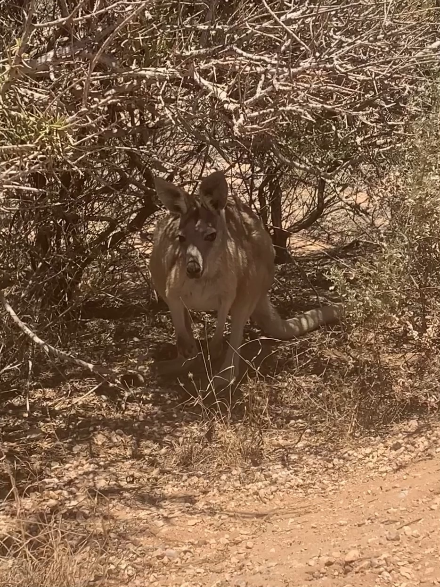
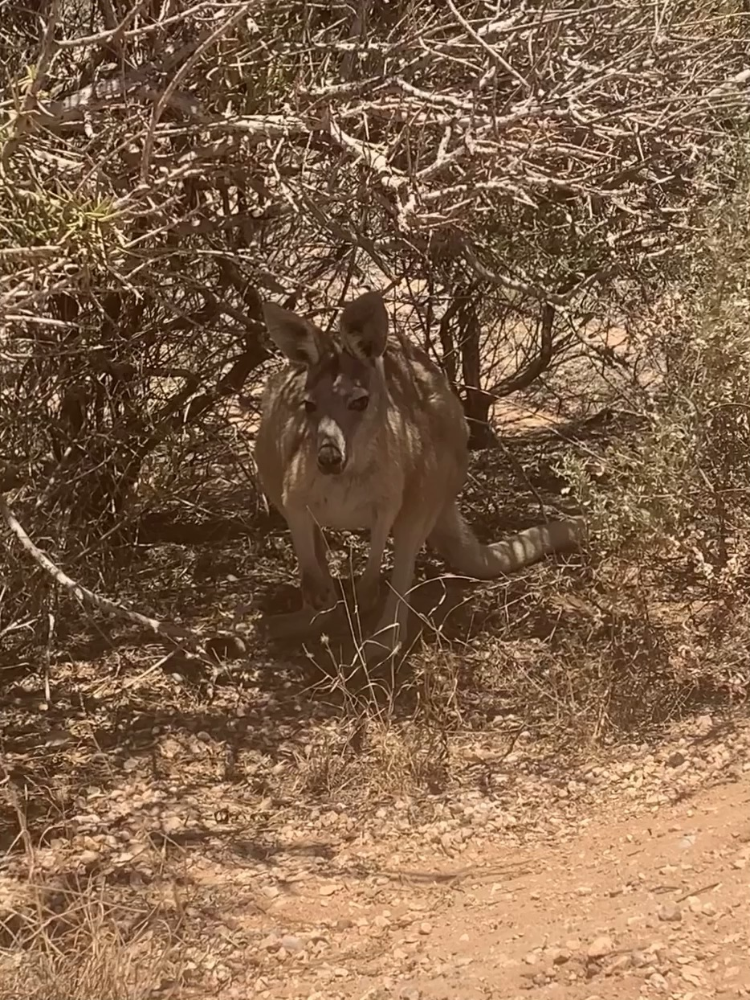
 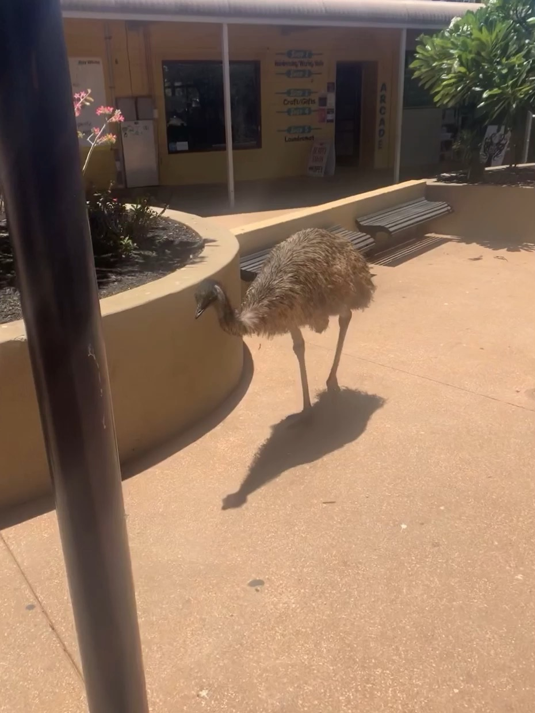
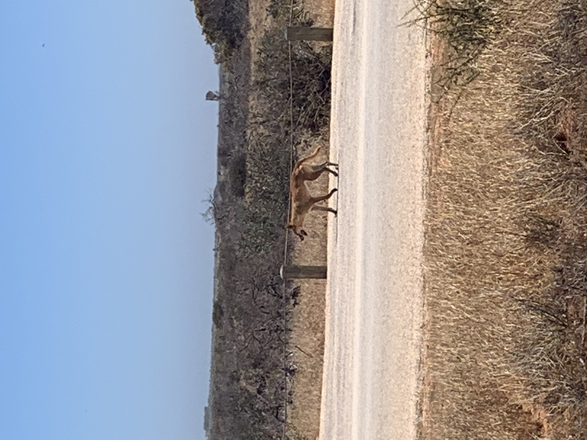
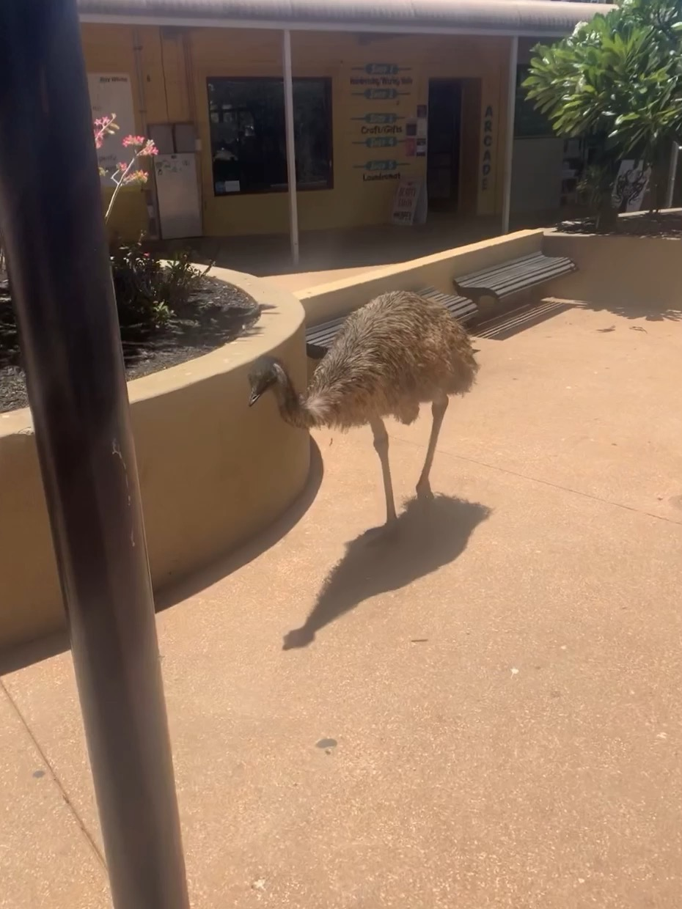
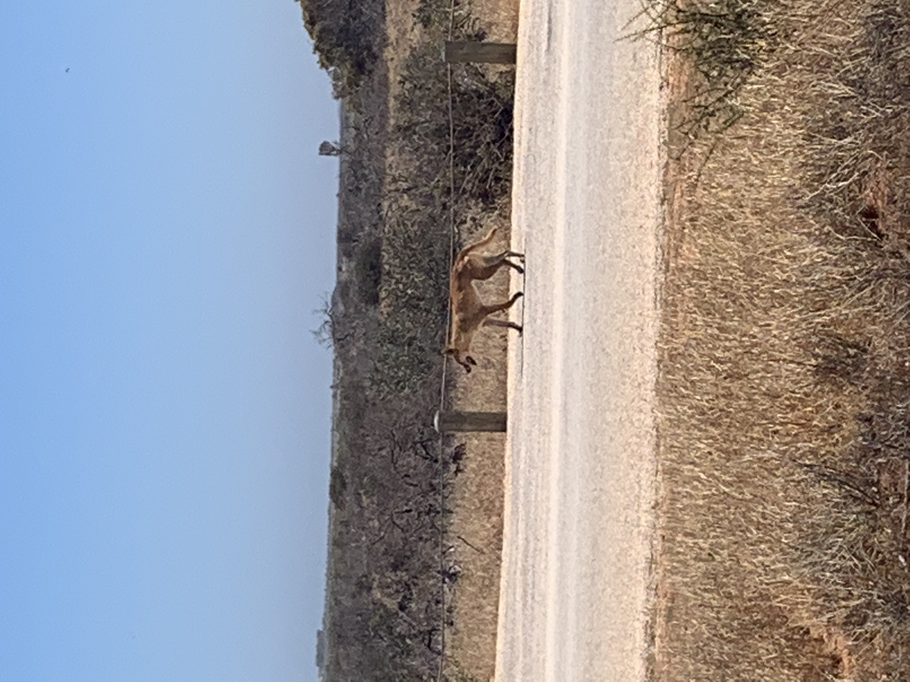


 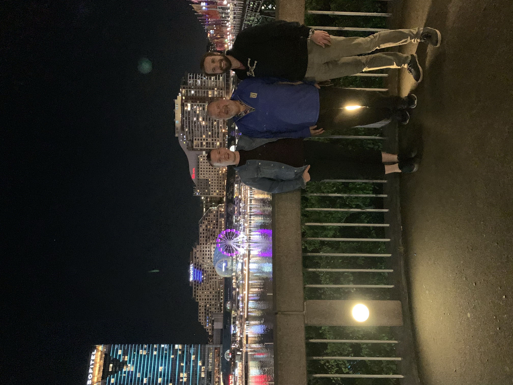
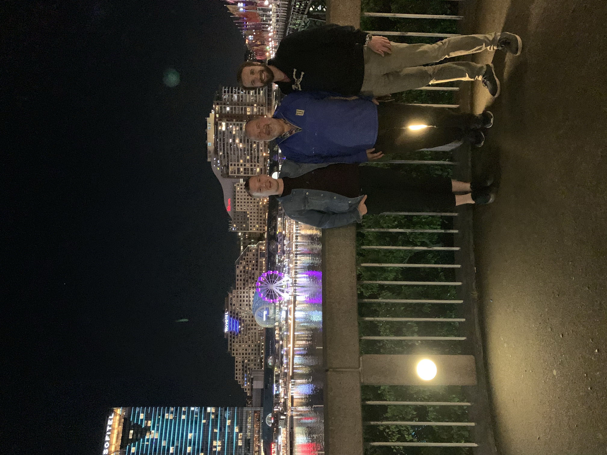
 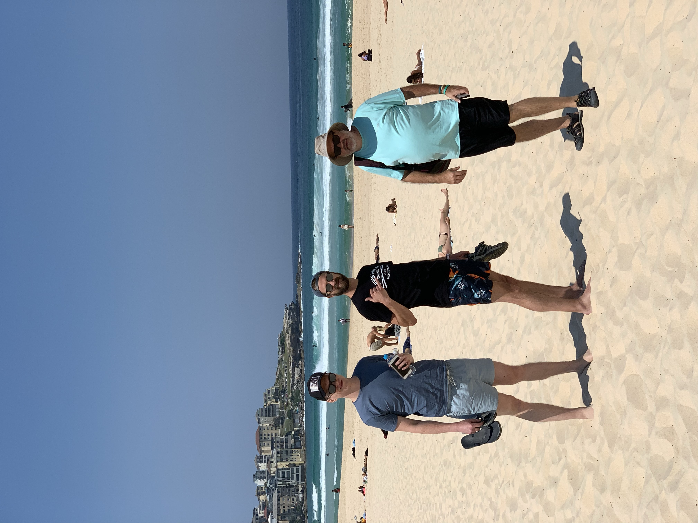
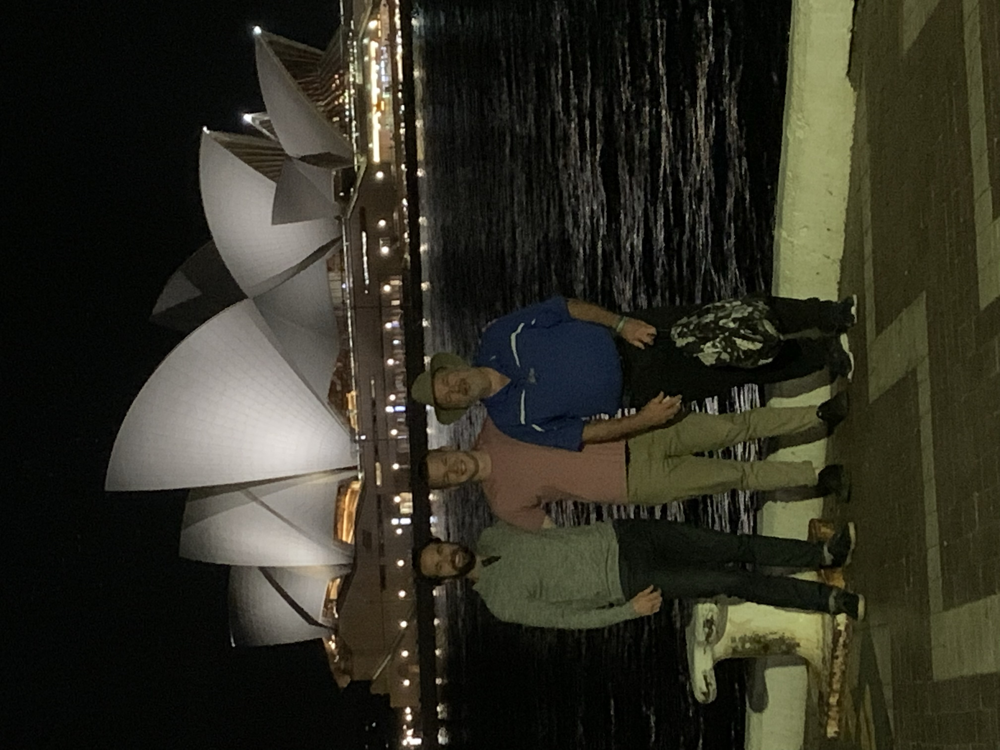
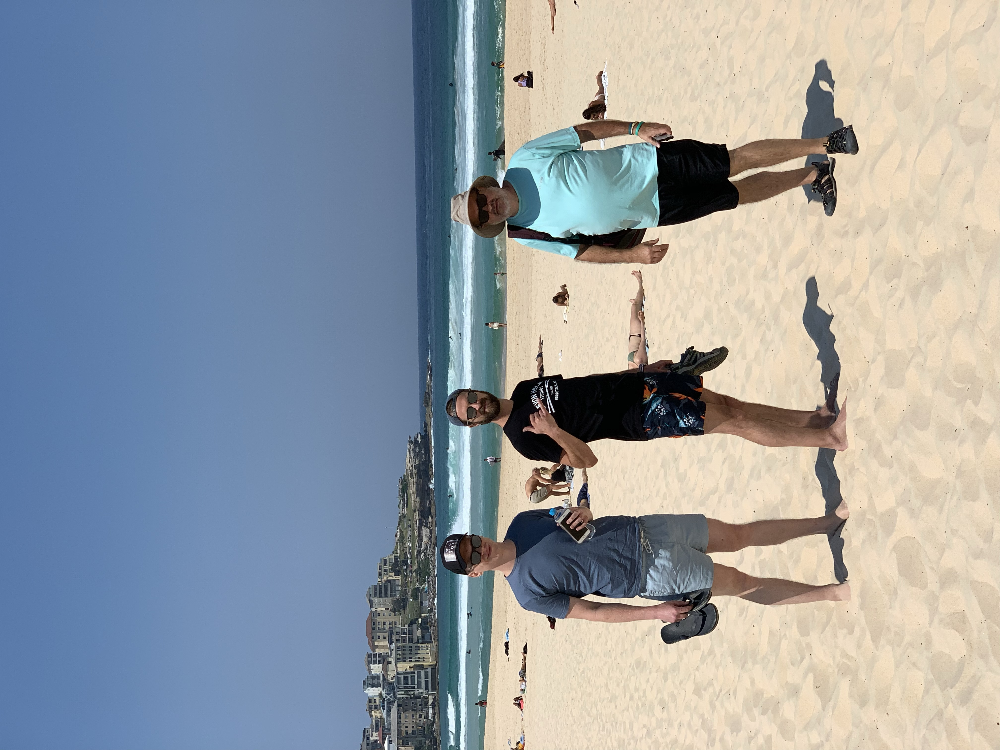
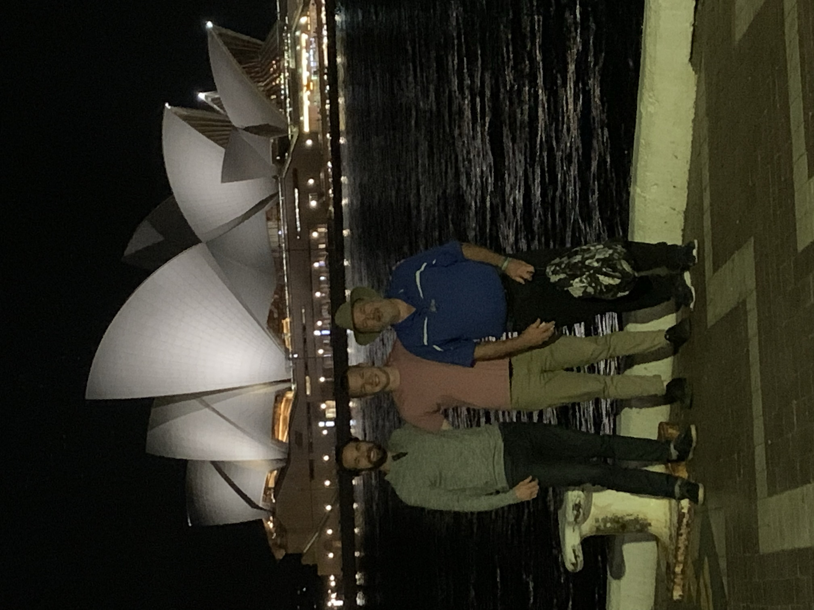
 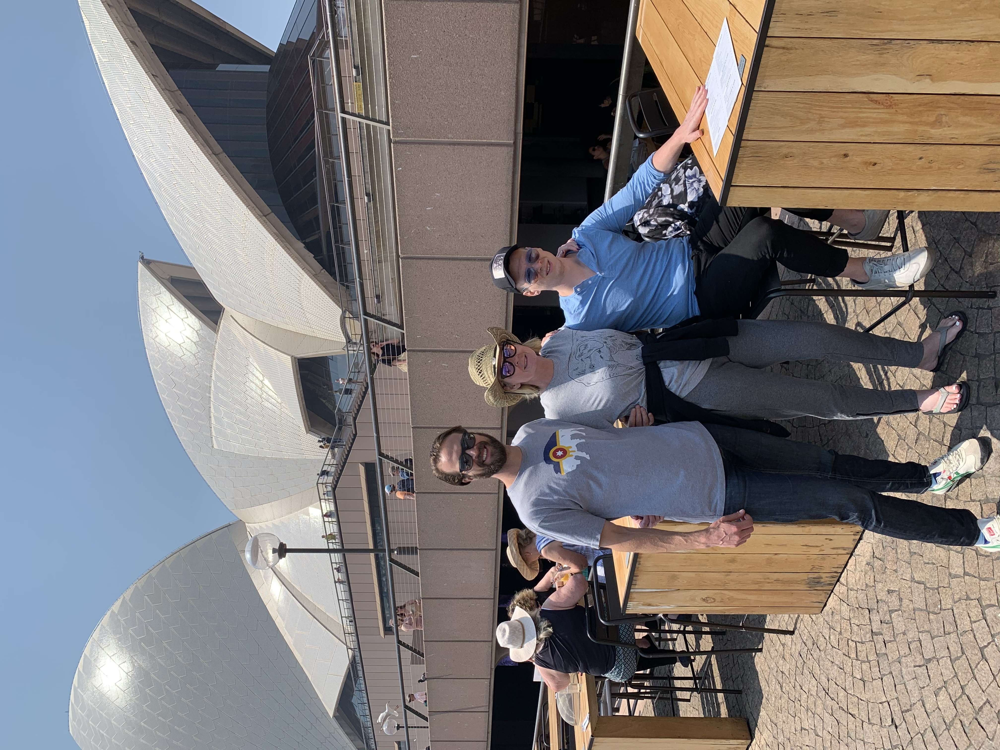
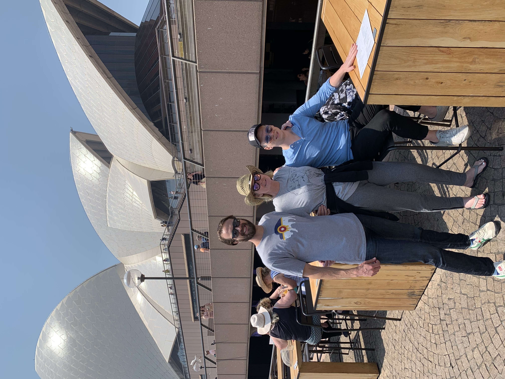